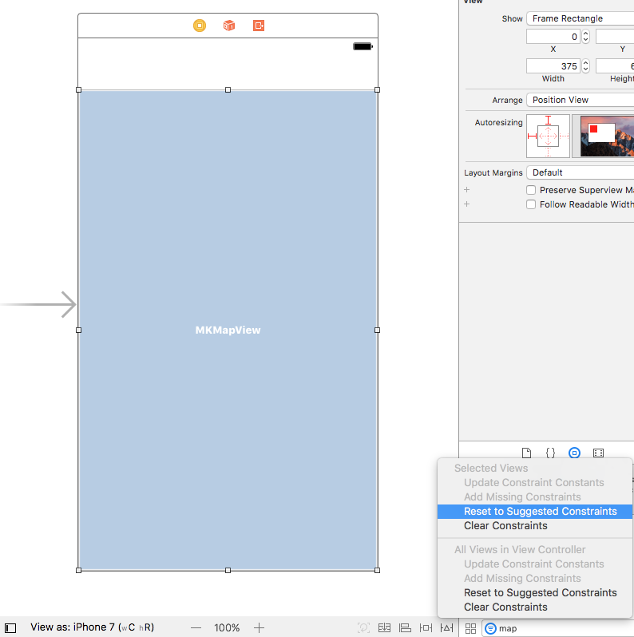
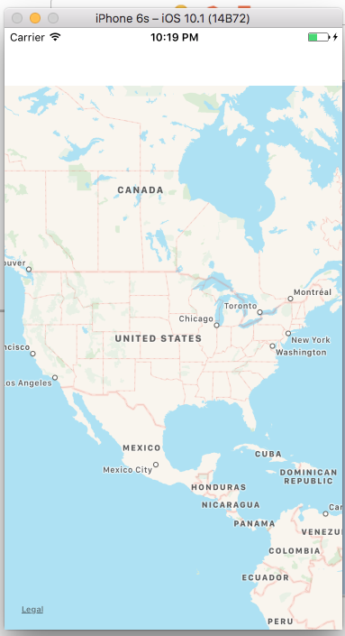

When you first open xCode, start by selecting the option to create a new project. Then you will be asked to choose a template for the project. Select iOS and Single View Application
On the next page, name the application MapApp, select the language Swift, and set the device family as Universal
After you create the application, you can select Main.storyboard from the Project navigator menu on the left hand side. Once the storyboard is open, find the object library on the bottom right corner of the screen. Search for Map Kit View in the libray.
When you have located the Map Kit View object in the library, drag the Map View to the View Controller screen in the storyboard
After the Map View is added to the View Controller screen, you need to expand it to fill the screen. To expand the Map View object, select Size Inspector from the menu on the top right. Set X = 0, Y = 60, Width = 375, and Height = 603
Next, find the Resolve Auto Layout Issues option in the menu on the bottom of the screen and select Reset to Suggested Constraints to set the constraints for the Map View
Once you have the display all set, in the top right corner, click the Show Assistant Editior button to open the ViewController.swift file alongside the storyboard.
Before you can add any code for the Map Kit, you need to add import MapKit underneath import UIKit in ViewController.swift. After MapKit is imported, you need to create an outlet for the map in the code. To create the outlet, click the map while hodling control and drag it to the code inside the ViewController class and above the functions. When the outlet window pops up set the connection to Outlet and the name to mapView
Now that you have the outlet setup, it's time to test the app to make sure the map works. Press the play button to build and run the app in the simulator. When the app runs it should display a map like the one below:
